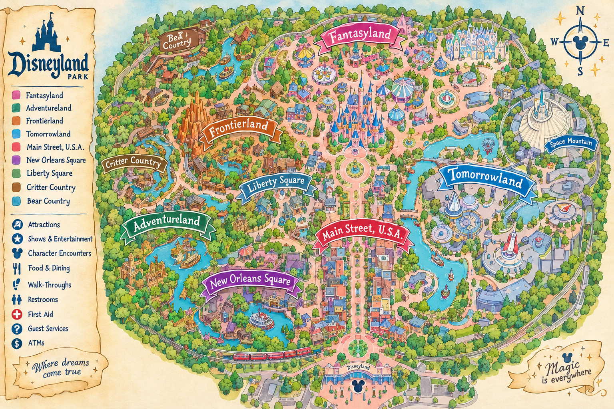

DISNEYLAND PARIS • LIVE PARK GUIDE
DLP Live Map
↻
Loading…
Wait source: Queue-Times.com
Map
List
Checklist
Both parks
Disneyland Park
Disney Adventure World
Everything
Attractions
Shows
Characters
All status
Live wait
Completed
Not completed
Closed
Resort
Disneyland Park
Adventure World
−
1×
+

100%
• Drag to pan • Scroll or +/− to zoom
☑ Tap a marker to check it off.
Green markers are completed. Zoom in for a closer look at each land.
≤20 min
21–45
46–70
71+
closed
no live data
Your checklist
Reset
×